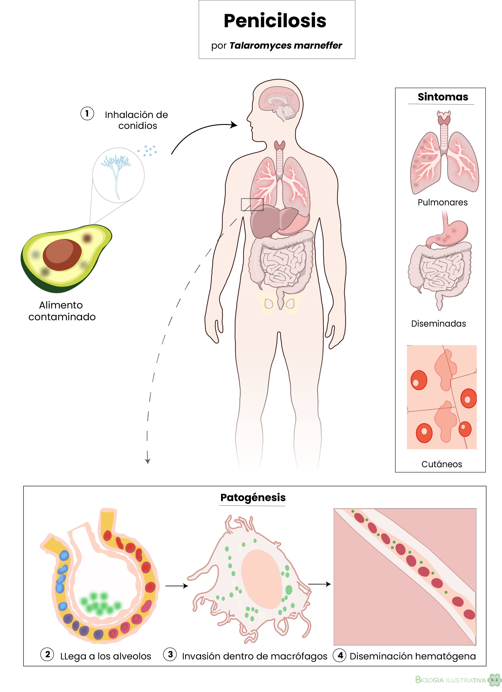

Ameba
— Organismo unicelular
Ilustración del trofozoíto de la estructura general, de una ameba. Se representan los pseudópodos característicos, el núcleo con endosoma central, las vacuolas contráctiles y las vesículas fagocíticas. La paleta neutra resalta la organización interna del organismo sin saturar al observador.

Ciclo de esporulación
Bacillus cereus
Diagrama del ciclo completo de esporulación bacteriana en Bacillus cereus: desde la célula vegetativa hasta la germinación del endosporo. Cada etapa está diferenciada por color y conectada con flechas claras. Diseñada para uso educativo en cursos de microbiología de alimentos y seguridad alimentaria.

Célula eucariota
— Estructura interna
Corte transversal de una célula eucariota animal mostrando sus principales organelos: núcleo con nucléolo, retículo endoplasmático rugoso, mitocondrias, vesículas y membrana plasmática en doble capa. La paleta azul fría facilita la diferenciación visual de estructuras en contextos educativos.

Bacillus cereus
— Bacteria patógena
Ilustración de Bacillus cereus, bacteria gram-positiva que puede causar intoxicación alimentaria. Se representan la célula vegetativa, la espora y los elementos estructurales característicos. Importante en estudios de seguridad alimentaria.

Chlamydomonas sp.
— Alga verde unicelular
Representación de Chlamydomonas, microalga verde con dos flagelos apicales. Se visualizan el gran cloroplasto en herradura con pirenoide, el núcleo central, el estigma y las vacuolas contráctiles. Organismo modelo en estudios de fotosíntesis, motilidad flagelar y biología molecular.

Penicilosis
— Infección sistémica fúngica
Infografía de la penicilosis causada por Talaromyces marneffei. Muestra los órganos afectados en el cuerpo humano, el mecanismo de diseminación hematógena y las estructuras celulares involucradas en la infección. Diseñada para material educativo de micología médica e inmunología clínica.

Aspergilosis
— Infección pulmonar
Diagrama de la aspergilosis pulmonar producida por Aspergillus fumigatus. Ilustra la entrada por vía respiratoria, la colonización del parénquima pulmonar y la respuesta inmune del hospedero. Incluye detalle del conidio y las estructuras de dispersión del hongo. Pieza de apoyo para docencia en infectología.

Ciclo de la amebiasis
— Infección intestinal
Representación del ciclo biológico de Entamoeba histolytica en el hospedero humano: ingestión del quiste, excistación en intestino delgado, colonización del colon y formación de nuevos quistes. Incluye las fases de trofozoíto invasivo, quiste maduro e inmaduro. Recurso educativo para parasitología clínica.
¿Necesitas una ilustración científica?
Creo ilustraciones vectoriales precisas para publicaciones educativas, material docente, divulgación científica y proyectos editoriales.
Hablemos de tu proyecto